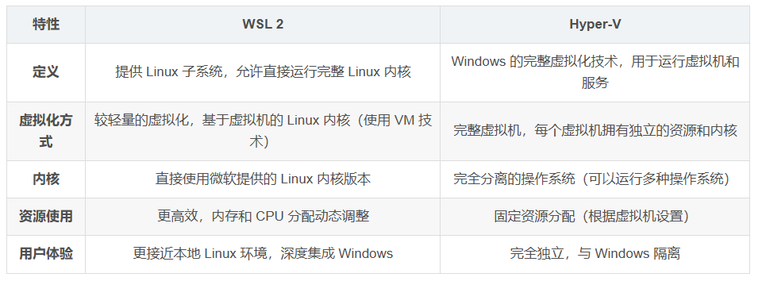
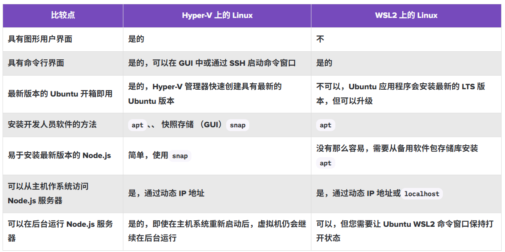
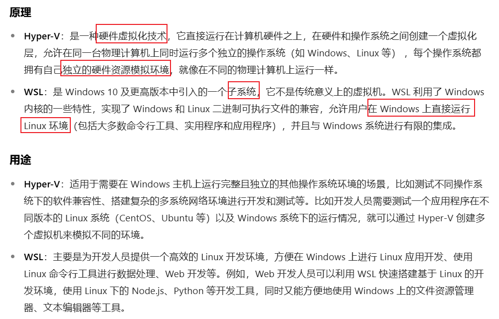

WSL介绍
WSL2（Windows Subsystem for Linux 2）是 Windows 提供的一种轻量级 Linux 运行环境，具备完整的 Linux 内核，它允许用户在 Windows 系统中运行 Linux 命令行工具和应用程序，而无需安装虚拟机或双系统。
如果想要在Windows系统上使用Linux系统，需要两个步骤：
- 在Windows系统上启用WSL2
- 安装 Ubuntu-20.04
此外，WSL 中的 Linux 系统与 Windows 系统之间可以进行文件共享 。在 Linux 中，Windows 的磁盘挂载在 /mnt 目录下，比如 Windows 的 C 盘在 WSL 中可以通过 /mnt/c 访问；反之，在 Windows 文件资源管理器地址栏输入 \\wsl$，回车后就能看到 WSL 中各个 Linux 发行版的根目录，方便在两个系统间传输文件。
共享机制：本质上，WSL 和 Windows 上运行的其他程序一样，共享主机的物理内存资源。Windows 的内存管理系统负责协调和分配内存，确保各个程序包括 WSL 中的 Linux 系统，都能在合理范围内获取所需内存。
文件存储位置：WSL 2 使用基于虚拟硬盘（VHDX）的方式存储数据，用户在 Linux 系统中创建的文件，都记录在 ext4.vhdx 这个虚拟硬盘文件里。从 Linux 系统视角来看，文件还是保存在正常的文件系统目录中，像 /home/user 下的文件，就是用户个人文件。只要虚拟硬盘文件不被删除或损坏，文件就会保留，并不会因为关闭程序而丢失。
wsl的配置文件：（1）wsl.conf：是存在于各个系统内的配置文件，只对子系统生效；（2）.wslconfig：位于windows系统中，对所有子系统生效。修改配置文件后，要使用命令：wsl –shutdown重启wsl（这会关闭所有子系统），然后至少等8s，配置才能生效。
网络配置问题：刚下载完Ubuntu，用户可能会遇到网络问题，解决方案是在C盘用户目录下创建一个.wslconfig文件。
警告信息：wsl: 检测到 localhost 代理配置，但未镜像到 WSL。NAT 模式下的 WSL 不支持 localhost 代理
资源管理器不显示Linux子系统问题：下载完Linux子系统之后，理论上在资源管理器的左侧栏应该会显示Linux（企鹅）的，但我的没有显示。查找原因发现是旧版wsl不匹配新版windows系统。（安装的时候我的是wsl2,可能不是最新版导致的）。因此只需要在powershell中，输入wsl --update即可，等待完成后重启explorer就可以了。
Hyper-V和wsl
  1、相同点：Hyper-V 和 WSL都是微软提供的在 Windows 系统上与其他操作系统交互的技术。最新版本的 WSL 使用 Hyper-V 架构来实现其虚拟化。
2、不同点：在 Hyper-V 虚拟机中运行 Ubuntu Linux 与在 WSL2 中运行作系统之间的最大区别在于能够访问 Hyper-V 中的 Ubuntu 用户界面。
- WSL2 实例相当轻量级，可以安装几个不同的发行版，可以在必要时同时运行几个实例，速度快；资源分配在 Windows 系统的统一调度框架内进行，根据需要动态分配和释放内存等资源。
Hyper-V：如果你需要Linux，其他的虚拟机或想访问Docker的高级选项卡来分配资源；而独立但受限于 Windows 物理资源，手动为每个虚拟机指定固定的资源配额，在虚拟机运行期间，这些资源会被该虚拟机 “占用”。
链接：
Win10 安装 Docker Desktop ( 基于WSL2，WSL vs Hyper-V) （讲的也很好）
在 Hyper-V 和 WSL2 上使用 Node.js （讲的很好）
windows上WSL 2和Hyper-V 的区别_wsl2和hyper-v区别-CSDN博客
附两个Hyper-V安装虚拟机的链接：（可以看看）
另外，我的电脑在“启用或关闭windows功能”中不显示
hyper-v选项（没安装wsl之前是有显示的），猜想这是因为安装wsl导致的。为什么我的电脑没有Hyper-V选项？
【而我的显示：Hyper-V 要求: 已检测到虚拟机监控程序。将不显示 Hyper-V 所需的功能。】
创建新用户
安装好wsl和Ubuntu后，会发现默认以 root 用户登录。可以WSL 终端（默认 root）下运行
- 添加新用户
- 赋予新用户sudo权限
| Ubuntu账户 | 密码 |
|---|---|
| xxcjw | 123456 |
| xxcjw | 123456 |
Ubuntu卸载
不管是从微软商店安装还是通过wsl --install命令安装，如果直接在电脑安装软件列表中卸载Ubuntu，不会自动释放存储空间，使用下面命令卸载安装的Ubuntu，则可以释放空间：
wsl --unregister <DistributionName> 如，
wsl --unregister Ubuntu-20.04
sudo命令
sudo（Superuser Do）是 Linux 和 macOS 等类 Unix 系统中的重要命令，用于以超级用户（root）权限执行特定命令，避免直接登录 root 账户带来的安全风险。
核心功能就是临时获取管理员权限。允许普通用户在执行特定命令时获得 root 权限，无需切换账户。
apt命令
apt 是用于管理软件包的核心命令行工具。它可以帮助你安装、更新、删除软件，并自动处理依赖关系，是 Linux 系统中最常用的命令之一。
sudo apt update
这个命令用于更新系统的软件包索引信息。具体来说，它会从配置的软件仓库中获取最新的软件包列表。执行这个命令不会安装任何新的或更新的软件包；它只是确保您的系统知道所有可用软件包的最新版本。
参考链接
Win10/11系统下WSL2+Ubuntu20.04的全流程安装指南
WSL(微软Linux子系统)简单使用笔记 （卸载问题）
Windows与wsl2中的ubantu互相访问文件夹 （交互访问、vscode连接到WSL2）
WSL 使用史上最详细教程_wsl使用教程 （ Microsoft Store 需关闭梯子）
从Microsoft Store安装linux发行版和wsl –install -d Ubuntu-20.04没区别：
- Microsoft Store 安装：过程简单，对新手友好
wsl --install -d Ubuntu-20.04安装：需要以管理员身份打开PowerShell 来执行安装
wsl --install命令默认安装的是当前推荐的、与 WSL 适配的 Ubuntu 版本。-d表示安装指定的Linux发行版